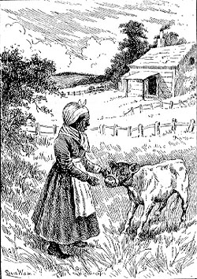
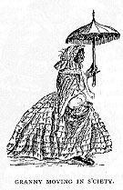
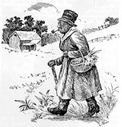
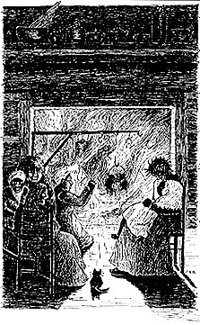

THE BEE-KING AND THE AUNTIES
Mary Alicia Owen
IT was not a convention of witches, though it bore the outward seeming of one; it was Aunt Jinny's "company," and a "good time" the guests were having, too.
Aunt Jinny or, as her intimates called her, "Granny," sat in the middle of the semicircle drawn round the great fireplace ablaze with the conflagration of a quarter of a cord of hickory logs, and felt herself as important a mistress of the situation, there in her cabin, as any queen could in her palace of carved stone. A great authority in her way was Granny.

"SHE COULD TELL WHEN TO WEAN A CALF"
She knew the value of every herb and simple to be found in the
state; she was an adept in the healing art; she could " set"
hens so that they never lost an egg; she could outgeneral the
shyest turkey that ever "stole its nest" in the weeds and
brush;she could tell when to wean a calf or baby and when to
plant " craps" by the age and position of the moon; she could "
lay out " the dead and usher in the living; she could interpret
dreams; she knew the "sign " of everything from the spilling of
salt to the flight of birds; she had seen ghosts and withstood
devils; she knew legends and tales without number; she could,
as actively as a girl, " pat Juba" and " jump Jim Crow "; and,
last and most important, she was, to quote her own words, "
bornded at Culpepper Courthouse in Ole Feginny an' hed seen
Gin'al Washington wid my own eyes." " An' I ain't no common ole
nigger," she would add, not boastfully, but with the calm
assurance of one born to high estate, " I mos'ly ain't no
nigger 'tall. Ise come down fum dem Lenny-Lennype Injuns dat
hilt de kyentry (country) 'fo' de w'ite folks come dar; an' I
wuz sold wunst an' fetched er heap o' money an' I would ergain,
Ise bound, dough I'se mo'n er

hunderd yeahs ole. 'Deed I would, kase Ise spry. Hit's only
shiftless critturs dat's cheap fum de start dat wears out
'arly." Her claims to aristocracy were always acknowledged by
her associates. She had been bond and now was free, and they
agreed with her in thinking that all the past glories and
dignities of her former owners, " the folks up at The House " a
few rods away, were centred and kept alive in her own proper
person. Her lineage, too, was believed in without a demur. She
was accepted as a child of the Werowances, although her
abundant grey wool was of the woolliest; no broader, flatter
nose was ever seen; no pure-blooded African ever had thicker
lips with a more decided curl outward. As to costume, Granny's
tastes were
evidently simple. Although she was C',nnnserl to have a fortune
in second-hand finery laid away in the various trunks and boxes
beside and under her bed, she was "saving o' gear." Only
Fourth-of-July, Christmas, circus-day, or camp-meeting ever
brought out the splendours of be-flounced and be-ribboned
gowns, or any one of the two or three dozen bonnets of all age,
shapes, and sizes that snugly reposed in her biggest " big
chist." Ordinarily, she appeared, as on this evening, in a
short costume of faded blue-and-brown cotton, a Madras turban
very much awry, and a pair of men's boots much the worse for
wear. Whene'er she took her walks abroad -- not to see the
poor, for she despised human " trash," but to hunt eggs -- she
donned a man's chimney-pot hat. " Yis," she would explain to
impertinent questioners, " I w'ars ole master's boots an' hats.
Wut's good 'nuff foh him is good 'nuff foh me, an' ef yo' don't
lak (like) hit, yo' kin lump hit an' look t'urr (the other) way
." As Granny always carried a stout hickory staff, and had a
nervous motion of her right arm when answering superfluous
questions, if her auditors " lumped " her raiment they were
usually discreet enough to do it in secret.

On Granny's right hand was a woman fully as dark as she, but
the darkness was of a different sort altogether. Granny, good
old soul ! looked with her century of gathered wrinkles as if
she had been carelessly covered with coffee-coloured crepe,
while the other was of the brown of old leather burned by the
sun and dried by the winds; a tall, strong, gaunt,
fierce-looking woman of eight-and-forty she was, with the nose
of an eagle, the eye of a hawk, the mouth of a cat, and hair
like the tail of a black horse. This was Madame Angelique
Bougareau, generally spoken to as " Mrs. Boogarry," spoken of
as " Big Angy." Big Angy sat before the blaze, scowling, and
knitting at a red mitten as savagely as if the insensate body
of yarn had done her a personal injury. Perhaps some one had
ordered mittens or socks and then ignored the order; perhaps
she had allowed an insolvent customer to get possession of a
great share of her precious " garden-truck "; perhaps an
impertinent housewife had dared to affirm that her soap
wouldn't "suds" or her brooms shed straws -- for Big Angy was a
dealer in some of the luxuries as well as the necessaries of
life, and was also the primitive type of that product of a
supposedly very modern business method, the commercial
traveller. She owned a little brown house set in the midst of
an acre of good, rich soil, better even than the average black
loam of North-west Missouri. On that acre she raised pretty
nearly everything good for man and beast, and, at the same me,
illustrated the freedom and lack of caste in frontier
civilization. " Touch-me-nots," " unprofitably gay," were not
more prominently in view of the passer-by than the cabbages;
the beets were as honoured as the "four-o'-clocks"; the onions
were in bed with the pinks, the marigolds with the radishes,
the larkspurs with the lettuce; the garlic was cheek-by-jowl
with the delicate musk-roses, and the prince's-feather and the
broomcorn nodded their tall heads together. Everything was as
good as everything else, and a pretty show the collection made
too, from the time the first parsley and crocus appeared
through the melting snow till the last dahlia and tomato were
gathered. When its season of growth and fruitage was over and
all things not plucked and garnered were shrouded in straw, old
coffee-bags, and cast-off garments, Angy's weekly rounds from
house did not cease. Instead of the flowers that bloomed to
lade, stiff bunches of " bachelor's buttons," " everlastings,"
and bittersweet-berries peeped from under her great
basket's-lid, and the place of the vegetables was taken by bars
of " hard," and gourds of " soft " soap (Granny had taught her
the art of civilization known to them both as " soap-bilin"'),
hearthbrooms, socks, mittens, grated horse-radish, and
little jars of a villainous sweet compound of pumpkin stewed
with watermelon juice and known to all as
"punkin-butter.'' She drove good bargains as a rule, and might
have been a person of independent means if she bad not allowed
her worthless little Creole French husband, "Lame Joe," to
gamble away the greater part of her earnings. When advised
against yielding to this amiable weakness, she defended herself
by saying, " Me daddy was gret French hunter, me mammy was
chile ter de big chief de Iowas. Dey not putt by lak de squir'l
in de hole, w'y me do so ? " "Des (just) please yo'se'f 'bout
dat," Granny would make answer, with offended dignity. " Ef yo'
lak (like) dat Joe drink up all dat hahd wuhk (hard work), let
'im drink um, cat's all ! -- but ef enny oh my ole mans
(husbands) wuz a-libben, I boun' yo' see sumpin diffint !" " Me
hab save alway some silba piece foh de mass," Big Angy would
say, half in apology. Granny considered that as great a waste
of good money as making a banker of Joe, but she was too
discreet to challenge religious prejudices -- of which Big Angy
had many; her faith, indeed, being of as many hues as Joseph's
coat, as was
evinced by her keeping her medicine-pipe and eagle-bone whistle
along with her missal and "Key to Heaven"; by carrying a
rabbit's-foot and rosary in the same pocket, by wearing a
saint's toe dangling on her bosom and the fetich known as a "
luck-ball " under her right arm.

On Granny's left, sat Aunt Em'ly, a woman about Big Angy's age
and stature, but of a different avoirdupoise and temper. Her
jolly soul was enveloped in billows of fat, and her round eyes
looked on the world with childlike content, in spite of her
hard labours, day in and day out, at the washtub, the merciless
scoldings she received from her rheumatic old husband, and the
various tribulations brought upon her by her worthless sons.
Like Angy, she was a half-breed, as her high cheek-bones and
shiny black ringlets falling to her shoulders proved beyond
dispute; but she was of another class altogether, her mother
having been a negress and her father a Fox Indian. Nearly every
night, after her labours were done, she trudged the two miles
between cabins to visit Granny and smoke her tobacco, and talk
of the good old times, the like of which they should never see
again -- those times when the thriving city, growing so rapidly
towards their country cabins, had been only a cluster of
shanties on the banks of the Missouri, and had not encroached
on the virgin forest, alive with mysterious whisperings and
strange wild songs, nor on the grassy plains swept into waves
like the sea's by the winds, and jewelled as the sea never was
by an unreckoned multitude of wild flowers. Ah ! those
were good old times, when the forest meant more to the
human intelligence than its price in cordwood and lumber, and
there was another valuation to the plain besides its capacity
for raising hay. Each had its voice and its story, in the good
old times, when the heart of Mother Nature beat in unison with
her children's, and she did not in the depths of her scarred
bosom and sapped arteries feel herself a Lear despised of the
children she had enriched. The good old times! The good old
times ! others besides Aunt Em'ly look back on them with regret
and longing.
On her knees, close to the fire, knelt Aunt Mary, an oily, dark
woman of forty, of middle height, well proportioned and strong.
Like all the other women, except Granny, she wore a calico
frock of a dark-blue ground sprinkled with white stars. On her
head was a snowy turban, but, white as it was, it was no whiter
than her great eyeballs and polished teeth. She looked the
typical darkey, but was accustomed to assert that she was "
some Injun'" " thes how it comed in " she did not know, but was
sure of it, nevertheless. She was the cook of " The House,"
slept in the cabin with Granny, and was assistant, not
associate, hostess. According to her own account, she was "
bornded in Tennissee, but mostly brung up in Mizurry." In both
states she had had some ghostly visitors and serious encounters
with his Satanic majesty, but, while her experiences were
usually considered as doing pretty well for one of her age and
opportunities, they were accounted trivial in comparison with
those of her friends. Her occupation, which necessitated her
lowly and devout posture, was the roasting of egg by tying
strings round their middles and dangling them before the fire,
a delicate feat in which many failed,but she was an adept. She
never let an egg fall, nor lost its " meat " by an untimely
explosion but years of uninterrupted success never palled her
enjoyment. Each egg, as it had a neat little hole pecked in
its side and was girdled by a twine loop, received the
rapturous grin accorded to its predecessor.
Opposite Aunt Mary, and half in shadow, was a little, bent
woman more important even than Granny. Nobody knew or could
guess her age. As for her looks, they are best described as a
recent acquaintance once spoke of a celebrated literary lady
---"Plain? --she'd be better looking if she were
plain!" The little woman was Aunt Mymee, the only pure-blooded
African in the room, and, oddly enough, the only
copper-coloured person present. Aunt Mymee was the child of a
Guinea sorceress who had fled on board a slaver to escape death
at the hands of her countrymen. Like mother, like daughter -
Mymee was a great "cunjerer," and would fain have had her
acquaintances believe she had the devil for a father. She was
treated with great respect, tempered with a hypocritical
cordiality, by her neighbours of colour, and was a valued
servant of the whites, owing to her skill and tenderness in the
management of children. In her lap at the moment was a
tow-headed white young girl who followed her about like a
shadow, and was supposed by the aunties to be "charmed." The
influence at that particular time to be reversed, for Tow Head
was giving evidence of perverseness. Aunt Mymee was
expostulating, coaxing, even threatening, in a low tone, all to
no purpose.
"I won't," Tow Head at last said, decisively. "Grandma
and Mamma know I am here, and they don't care. I'm not sleepy;
I won't go up to the house. If you fuss at me I'll break your
pipe; if youu let me stay and hear the stories I'll buy you a
head-handkerchief with my own money."
There was nothing Aunt Mymee desired less than a
"head-handkerchief," as she wore her hair (except on Sundays,
when it was carded out in a great black fleece) in little wads
the length and thickness of her finger, each wad being tightly
wrapped with white cord. She scorned to conceal these efforts
to "take de kink outen de wool," as did other ladies of colour
with their kerchief-turbans, but as the proffer of the present
she would not wear was accompanied by many vigorous hugs and
pats, she weakly yielded to bribery and allowed her charge to
remain.
Granny looked at the two sadly. She knew a charmed hcild when
she saw one, and was resolved to do what she could to relieve
the unconscious victim. Oh! she knew Aunt Mymee, and so did
the others. Although they visited and received her in turn,
although she had lived in the cabin a few rods from Granny's
for years, not one of them ever went to bed at night without
hanging up a horse-shoe and pair of wool-cards, at the bed's
head. Not one of them failed to pour a cup of mustard or
turnip-seed on the doorstep and hearth, so that she would have
to count all those seed before she could go in at the door, or
down the chimney to tie their hair into knots; to twist the
feathers in their beds into balls as solid as stone; to pinch
them with cramps and rheumatism; to ride on their chests,
holding by their thumbs as by a bridle, white she spit fire at
them till cock-crow. Not one of them had any doubt as to her
ability to jump out of her skin whenever she pleased, and take
the form of owl, black dog, cat, wolf, horse, or cow. Not one
of them merely suspected, she knew Mymee could appear in
two places at once, ride a broomstick or a bat like a charger,
and bring sickness and bad luck of all sorts on whomsoever she
pleased. No wonder the aunties sighed in secret over the
recklessness of white folks in turning such an uncanny body
loose among the children. If Aunt Mymee knew what they thought
she gave no sign; for when not engaged in confidential
discourse with Tow Head she smoked in silence. Perhaps she was
thinking of the stalwart sons killed in the civil war; perhaps
of the Negro husband, the Mulatto husband, the Indian husband,
and the virtues that made her take them, and the failings that
made her " turn 'em all loose "; perhaps she was meditating
some awful "trick," or magic curse. Whatsoever the thought was,
she kept it locked in her own cunning brain. The child's
caresses she received with secret delight at Granny's
uneasiness and jealousy, but that light emotion made no ripple
the eye could detect, she smoked on and on in seeming
peacefulness and innocence.
Big Angy broke the silence with a French oath, accompanied by
an angry gesture. She had snapped her clay pipe in twain, and
as she flung the fragments among the blazing logs she
anathematised it stem and bowl.
Granny kindly made good the loss by taking from one of her many
pockets a pipe made from a corn-cob, and fitted with a
sugar-cane stem, which she handed her guest without a word.
Big Angy received it with a grunt that might have meant
thankfulness, put it in working order, and went on smoking.
Granny watched her with great concern.
" Ain' yo' sorter out o' sorts dis ebenin', Miss Boogarry ? "
she inquired.
" Yes, me is," answered Big Angy, in a dialect similar to her
friend's, but garnished with patois and a few Indian gutterals.
"Ise out o' sorts fum top to toe. Dem bees" -- she qualified
them with an adjective not necessary to repeat -- " am
'stractin' me."
" Wut dey done ?"
" Me dremp 'bout um."
" Dat er mighty good dream -
'Dream o' honey, lots o' money;
Dream o' bees, lib at yo' ease., "
" Na dishaway dat my dream go. Hit bin dat de bees wuz all
daid, en' de hibe (hive) chock full o' mots (moths).''
That was serious. All the aunties sighed in sympathy.
" Dat ain' all ne'er. Dey's mo' ahine. In de swa'min'-time dey
run off, dey pay no 'tention at me. Hollerin' an' poundin' on
de dish-pan ain' do no good. Off dey go ! "
" An' yo' bees bin oncommon good twell (till) now! I 'low yo'
done rnek un mad somehow or ur nurr," said Granny.
"Dat's de truf," groaned Big Angy. "W'en my sister darter die
an' dey sent after me, hit slip me mine dat I otter tell de
bees an' putt mo'nin' (mourning) on de tribes. Dey bin mad
hand-runnin' sence cat."
" I ain't s'rprise none," said Aunt Em'ly, cheerfully. " Ef yo'
don't tell de bees 'bout all de bornin's an' weddin's an'
fun'als dey gwinter (going to) cl'ar out ur else sorter pindle
(pine) an' did. How come dat I know dat, I done lost de
lastest bee I got w'en my Jake merry Aunt Kate's big yeller
Sally. Hit comed on me dat suddint dat hit ain' cross my mine
dat I got er bee, twell I wuz a-settin at de table, an' Aunt
Kate, she holler 'cross me, will I gib de young folks de two
fust swa'ms dat come al I wuz dat skeered dat I mighty nigh
cussed ! ' De good Lawd!' sez me, an' drapped de vittles dat
wuz on de way ter my mouf. 'De good Lawd, Aunt Kate! I
ain'tole dem bees dat Jake an' Sally wuz a-merryin' dis night
!' Aunt Kate, she des fell bat in 'er cheer lak someun hit 'er
wid er dornick (stone). 'Well!' says she, 'I 'low de young
folks ain't "wine ter tire deyse'fs out, takin' keer o' all de
bees yo' gwine ter hab fo' um.' An' dat wuz de troof too. I
ain' got nair bee ter my name by de nex' spring. I bin puttin'
my pennunce (dependence) in de honey dat I find in de woods
sence dat. Dey ain't no use o' me a-trying ter raise bees."
" Ef yo' steal some new hibes en' leabe de price in dey place,
yo' kin raise some ergin (again)," said Mymee, oracularly.
" Reckon I could?"
" Sholy. Hit's de finest kind o' luck ter steal bees an' de
worsest in de world ter sell um, dough yo' kin fa'rly buy um
widout crossin' de luck if yo' leabe de price on de bench whah
yo' steel um rum.''
"Honey ! " cried Aunt Mary, suddenly, as she critically
examined an egg and seemed to be addressing it instead of the
company. "Honey is good ter eat an' good ter drink an' good ter
wear."
A chorus of laughter greeted her remark.
" Dat's so," she insisted, stoutly, after joining in the laugh.
" Hit's good ter eat, all um yo' knows dat. Hit's good ter
drink ef yo' putt de hot wattah an' de spice wid hit w'en yo'
got de sore th'oat, en' hit's good ter wear ef yo' got chap'd
han's' ur ef yo' am 'fraid o' ghostes. W'y, I knowed er 'ooman
dat did de milkin' foh er milkman, an' she hatter (had to) go
home arter (after) milkin' through er big holler whah de
ghostes wuz ez thick ez gnats in de summah-time. Fust time dat
'ooman go through dat holler, she sheered swell she kyarn'
(camlot) squall. She tell't (told it to) witcher 'oomen.
Witcher 'oomen say, 'rub fum head ter heel wid new honey, an I
boun' yo' don't see nuttin mo' -- not eben ef de moon am on de
wane an' a-ridin' on 'er back up in de sky.' 'Oomen do dat,
regler. See nuttin no ma'; but, man suz! her close (clothes),
dey des (just) wuz er sight fum dat out, an' de flies, dey
foller 'er round lak de little niggahs feller de sukkus-waggin
(circus-waggon)."
"It's good for something else," said Tow Head, sitting up. "
It's good to per-oph-e-sy."
" Wut dat ? " asked Granny, with a suspicious glance in Aunt
Mymee's direction.
" That's to know what's going to happen," explained Tow Head,
importantly. " Mamma told me the big word for it, and I found
out the rest from Aunt Mymee. Yes, I did, Aunt Mymee ! Dor't
you remember that time you coaxed me to get you some of
Grandma's amaranth seeds and told me that amaranth seeds,
honey, and whiskey made into a cake and eaten in the dark of
the moon would make people know when things were going to
happen ? "
" I wuz des a-projecking (projecting -- experimenting) wid yo',
" mumbled Aunt Mymee. " Des (just) keep still mu' niggahs an'
I'll sing ter you, torectly."
" But twasn't projecking," piped Tow Head, getting and shriller
with each word, " for I ate some when you were not looking, so
as to see if Uncle John would bring me he promised me, and I
couldn't tell, but he came that very afternoon and he did have
the doll. Before that he always forgot. Oh, yes ! and you made
a love-cake too."
" Dat chile gwine ter git pizoned, some day," said after an
embarrassed pause, " ef she go dippin' an' projeckin' hither
an' you', bedout axin' leabe o' dem dat's older."
Aunt Mymee's eyes snapped.
" I 'low " she remarked, with deliberate emphasis, " I got er
intrest in ain't gwine ter drap off, suddint, ef I'm
dar."
" Truf, truf, Aunt Mymee, ef yo' dar," Granny made haste
to answer. " Hit wuz de times yo' wuzzent afar dat gimme de
worrymint. Missey, she's a mighty free hand 'bout a-dippin' in
an' --- "
"Oh, stop fussing, Granny ! and tell some stories. Tell a
bee-king story," interrupted Tow Head. " Mamma scolds I need.
You tell me a pretty story."
" Yes, Aunt Jinny, tell my lit lamb er putty tale 'bout de ole
bee-king," urged Aunt Mymee, sweetly.
"Law, now! my tales dey's sech ole tales," said Granny,
modestly. " Ef yo' ax Aunt Em'ly now, ur Miss Boogarry, I lay
(wager) dat yo' git er tale yo' kin putt by in yo' membunce
(memory) medout a-grugin'de room hit tek up."
A chorus of protests from the parties so honourably mentioned.
" Well ! " said Granny, at length, " ef yo' sesso, I gwine ter
mek de start, den de res must roller wid dey tales. I fetch on
de pone (maize bread), de res'fetch in de sweetnin'.
Having thus poetically defined her rank, and at the same time
paid her friends a compliment, Granny filled her mouth with
smoke, blew it out through her nostrils like an amiable dragon
and began:
"In de good ole times w'en de trees an' de beasts wuzn't feard
ter talk foh fear l' bein' sot ter work, dey use ter be a heap
o' spressifyin' (expressing opinions) in de woods. Special dat
wuz de way mungst de bee-trees1 , Kase (because) dey wuz feelin' mighty sweet
an' peart wid dey eensides all fill up wid honey in de comb.
De trees wid honey in dey hollers wuz all sot up, lak chilluns
(children) whut am got de sugah-tit in dey moufs, or
sugah-plums in dey brais-bastets (bread baskets - stomachs).
Dat's de way dey wuz. Dey wuz thes (just) dat high in dey tops
dat day mos' fegit dey use ter be nuttin but saplin's
a-switchin' in de wind, an' atter dat ole holler logs twell de
ole king b de bees, he say unter de new swa'm dat came off,
'Git in dis tree !' Oh, yes ! de favourites o' de ole
king, dey jounce dey limbs up an' down an' fluster dey leabes a
heap, des de same ez fine ladies toss dey heads an'
swish dey skyurts."
"Oh, Granny ! what does the king look like? Did you ever see
him ?"
"Now ! Dat show yo' ain't ne'er seen 'im, an' dat suttinly am a
shame, kase he's de finest king a-gwine. He am brown lak de
bees deyse'f, an' he eyes am des de colour ob honey, an' he
ain't got no ha'r on he head, an' he nose an' he eyebrows an'
he eye-winkers bin mek out l' stone, an' - oh, my! -- he got er
crown on he lil bald head mek out o' bummle bees ez long ez
brack-buhds (black-birds) an' all a-stannin' up on dey tails."
"Oh, Granny ! " breathed Tow Head, squeezing her knee in her
two little hands because she must do something, or die of a
repressed ecstasy of satisfaction and anticipation.
"Sidesen (besides) dat," continued Granny, with the unelated
air of a genius conscious of its own powers, "I ain't done name
ter yo' dat he got er mighty quare suit o' close (clothes) mek
out o' bee wings; nur I ain't say dat he kyar (carry) round er
long paw-paw stick wid er whustle in de eend foh ter whustle de
bees back ter wuhk (work) w'en dey go a-traipsin' (strolling)
off, a-playin' in de field stiddier (instead) o' tending ter
bizniz. Oh, he wuz de fine genterman, suz ! He uster go
a-paradin' thu the woods an' a hyeahin' (hearing) eb'ry libbin'
ting dat de crittuz (creatures) wuz up ter, eb'ry ting,
kase he c'd hear de grass grow an' de fedders a-sproutin' on de
lil young buhds in de nest, let 'lone de sorftes' whispeh dat
kin be talked. One time - 'twuz de night time an' de big
clouds wuz a-rollin' in de sky - ole king, he stop by de big
oak dat got two hollers an' two swa'ms o' bees. Now, dat oak
he bin mighty proud dat he sich a favourite date he got
two swa'ms w'en de rest o' de trees, dey ain't got but one,
but, at de same time, he allus bin sorter high-strung
(high-tempered), an' now he gittin' ole he wuz dat cranky an'
cross ! Ole king, he lissen foh ter see how de queen-bee
behavin' 'erself in dar. She wuz 'havin' mighty nice time, but
ole oak, he grummle an' grummle. He say, 'I des sick an' tired
ob dese bees gwine hum ! hum ! twell (till) Ise plum
'stractid. Fust dis side ! den dat side ! -- hum ! hum ! hum
! Hit's wuss den de locust wid dey hollerin', ah-zee, ah-zee,
ah-zee, w'en de sun stan's high. An' I don't lak dat honey -
sweetnin' a-ropin' around an' a-dribblin' out on my bahk (bark)
an' 'tractin' de bugs an' varmints, dat I don ! Ise a mine to
drap whole heaps o' bittah sap on ter 'em some o' dese days,
dat I has !'
"W'en de ole king hyeah dat, he wuz des ez mad ez fiah (fire).
He mek one grab," cried Granny, raising her voice and suiting
the action to the word so effectively that all her hearers
jumped, and Tow Head screamed in addition, "an' he scoof dis
lot l' bees out o' de oak wid one hand, an' nurr grab an' scoof
dat lot wid turr hand, an' --- bim! --- he gin dat
servigrous (fractious) ole tree des one peck wid dat big stone
nose o' hissen a', de laws an' de lan'! dat ole oak bin
petterfactid. Hit bin mek in ter stone thu an' thu. Dat am
sholy de fack kase I'm got a piece ob er tree dat bin done
dataway, my ownse'lf an lo an' beholes ! hyeah 'tis, dis same
piece dat I rub ginst my arm w'en hit git de rheumatiz; hit
mighty good fer dat."
" Oh, granny !" burst in Tow Head, " is that a piece of the
very same tree you've been telling about ? "
"Hit's des ez possumble ez not dat hit is," said Granny,
gravely. " Ef 'twuzn't dat tree hit come fum, hit bin one dat
wuz catch (caught) de same way."
" Dat's so," agreed Aunt Mymee, rousing up. " Dey use ter be
heaps o' dem stone trees round in de kyentry (country), an' dey
all bin sarve dataway kase day wuz sassy ter de king, ur he
tuck up de notion dey wuz."
" Granny, dear, sweet, sugar-pie Granny, please, please,
PLEASE, let me hold that stone in my hand a minute. I'll be
very careful."
"De aigs is all did," announced Aunt Mary, to create a
diversion, for she knew Granny would never trust that precious
piece of petrified wood so near Aunt Mymee as Tow Head's eager
hands were at that moment.
" Den we gwine ter eat um hot," said Granny, briskly. " Fetch
um ter de table, Aunt Mary, w'iles I fish out de res' ob dat
cawn-pone (corn bread) an' er smidgin o' cole bile shoal (piece
of cold pork)."
" May I have two eggs, Aunt Mary ? "
" Oh ! honey, yo' can't hab none," said Aunt Mary, as she set
the dish of eggs on the table. " Yo' ma, she say dat ef yo' git
sumpin 'sides milk, ur mush-an'-'lasses out hyeah, she ain'
gwine ter let yo' come no mo'. Ain' she say dat, Aunt Mymee ?"
" O' co'se," said Aunt Mymee, " but dat ain't no diffunce.
Missey don't want no aig. She wuz des a-projeckin' wid yo',
wuzn't yo', missey ? " she asked, turning her charge's face
around in her hands and smiling insinuatingly.
" I wasn't ! I want an egg ! I want two eggs -- big ones, too !
"
" No, no, honey ! "
" Yes, I do, too ! and you're a mean, hateful old thing.
You're all mean, hateful old things," continued Tow Head,
noting the resolved expression of her friends. " I don't like
you; I don't like anybody in this cabin."
" I reckon I mought ez well tek de chile back ter de house,"
said Aunt Mymee, thoughtfully. " She feelin' so mighty 'bused
dat she betteh bed go lay de case 'fo' huh ma."
Instantly Tow Head's demeanour changed. That veiled threat of
conducting her into the presence of her parent was as potent as
soothing-syrup. The presence of mamma meant bath and bed. Tow
Head's aversion to water was equal to a medieval saint's, and
she had long ago resolved that when she was grown she would
never, never go to bed again; if she could have
heard a voice cry' "Sleep no more," she would
have received the mandate in a very different spirit from that
which animated the breast of the Thane of Cawdor. " I was just
funning, Aunt Mymee," she declared, with an embarrassed giggle.
Peace was restored. The supper, served in Granny's best china,
progressed with that tranquillity and steadiness peculiar to
well-cared-for cows and ancient dames.
When the last egg was eaten, the last bone picked, the
debris cleared away, and pipes were restored, Aunt Mary
announced with a perfect shower of grins that she " des
natchelly honed arter (yearned for) one o' Aunt Em'ly's tales."
Aunt Em'ly modestly declined " ter put fo'th any Ill triflin'
tale swell Miss Boogarry done tole sumpin wuth w'iles."
When Big Angy felt disposed to talk she needed no urging; when
she was in a mood for silence she heeded no importunity. This
evening was one of her times for communicating, so, without any
make-believe bashfulness or preliminary angling for
compliments, she told the story of " The Snake's Daughters."
It was a very long story as she told it, and plentifully
garnished with original comments, given in language that set at
nought all known rules for the personal pronoun, first person
singular. The nominative " me " and objective "I " of her
discourse added nothing to its quality and much to its
quantity, so they may well be omitted here, and only the sum
and substance of it all be given as Tow Head repeated it in
after years to other children: --
There was once an old witch who had a snake for a husband, and
even he was too good for her. She lived in a lodge by a stream,
and he under a rock hard by, and nobody but the moon and the
owl knew that they were married. In time they had two daughters
beautiful in the face as the most beautiful of maidens' but
with cold and scaly bodies. The daughters played on the land
and in the water, happily and without knowing that they were
not as other girls; but their mother knew, and if strangers
appeared, covered them closely with fine garments curiously
embroidered. When they were grown no man could see them and not
love them, no man could touch them and not hate them, so their
lovers all became enemies, and they raged furiously and came to
hate all human kind. No man took them to his lodge, therefore,
in accordance with their father's advice, they married snakes.
After that they laid all day in the sun and smiled, that they
might entrap the unwary, for each had a poisoned arrow given
her by her father on her wedding night -- an arrow endowed with
such deadly cunning and power that it never failed to kill
whosoever it was aimed at, and always flew back to its owner's
hand after it had done its deadly work. Each had also a bow
strung with her mother s hair. This bow told her who was
coming, and, if he was a charmed man, the one spot where he
could be fatally struck. Now, this was very terrible, so after
awhile all knew of the witch's daughters, and hated them
exceedingly because of their hapless victims. Everything in the
land went on very badly, for when one place was shunned the
snake's daughters secretly removed to a new one. Finally, the
king of the bees went by. He was ruler of the trees as well as
the bees, so those bows of wood dared give no warning of his
approach, nor tell his name and title, for he held up his hand
before them in token of silence. The strings of the bows hissed
like serpents, but that told nothing but that an enemy was by.
When the sisters saw him they smiled and beckoned.
He approached, smiling in turn. Instantly they fitted the
venomed arrows to the strings, but the bows bent like grass and
the arrows fell. Hissing louder than the bowstrings' the
sisters picked up the arrows and flung them like darts.
The strange, ugly man before them laughed till the sky and the
earth rang with the sound, and caught the arrows in his hands.
When the sisters saw their weapons were powerless they tried to
fly, but were given no time to get away, for the king had a
stone nose, and the breath from it worked enchantment. He
breathed on the arrows, and flung them at the sisters. They
were pierced to the heart' but did not die as women do. From
their wounded bodies came no blood, only water, stagnant and
dark. As it poured out they fell. Their fall was heavy, the
ground shook under them, the trees near by staggered as if
their roots were loosened from the soil. Where the sisters fell
they laid. No one buried them, but no matter, they did not harm
the air. Their father and mother did not bury them because they
did not know where they were, and did not find them for a long
time; neither did their husbands; but the birds did, and the
wolves and the worms; nevertheless, none of these creatures
molested them. The reason was, the sisters were changed into
stone by their own arrows. Many have seen them, and know this
to be true.
Granny nodded approvingly.
"Dat am er mighty fine tale," she said, turning her face from
the fire to her friend, and puffing tobacco-smoke about her
like incense.
"I seso, too," chimed in Aunt Mymee, with animation. "Am dat de
tale yo' laid off ter tell arter frost 'way back yondeh in de
summer-time, Miss Boogarry ? "
`` Dat him," replied Big Angy. " De Lawd know me tell no tale
de lil booggers is froze up in de ground. I de one dat know hit
gwine ter bring bad luck ef so dey hyeah me tell tales on
um."2
"Dey is cu'us 'bout dat. I ain't eter tell
no tales befo' fros', my own se'f," Mymee answered.
"Now it's Aunt Em'ly's turn," cried Tow Head, impatiently.
" Do go on, Aunt Em'ly, that's a good, sweet aunty. Mamma may
call me before you're through, if you don't hurry."
Aunt Em'ly smiled delightedly, but hesitated.
" Hit's er sorter, kinder skeery tale, honey," she said. " Ef
so be dat yo' git all wuhkt (worked) up an' a-cryin,' yo' ma
gwine ter lick ole Em'ly."
"'Twon't hurt but a minute, if she does," said Tow Head, with
an air of knowledge born of experience.
" Missey's des a-projeckin'," said Granny, jealous of the
family. " Dat chile ain't nurr yit feel de weight ob no han' in
de worl'. Huh! I t'ink I see Miss Agnes a-whuppin' chilluns.
Miss Agnes ain't come o' no wuhkin' (working) fambly. She ain't
got no strenk (strength) in huh lil wristes (her little
wrists)."
Tow Head had neither dignity nor family pride. Her mother's
adherence to the precepts of Solomon she considered a joke. Her
answer to Granny was a meaning smile and a closing of her
eyelids.
" Hurry up, Aunt Em'ly," she said. " Tell an old, old story."
" Tell nurr ole tale ! " exclaimed Aunt Em'ly, valiantly su
ppressing a chuckle at Granny's discomfiture. "Well, de laws
he'p my soul ! Ef yo' ain't the beatenest chile. I s'pect yo'
reckon ole Amlt Em'ly des mek out o' ole tales, des kase she
ole she own se'f. I lay I done tell yo' mo' a'ready den yo' lil
membunce kin tote (memory can carry). Howsomedevvah, er tale I
done promise an' er tale I "wine ter tell, an' hit gwine ter
run 'bout the aspums (aspens), wid de 'count ob de way dat hit
happen dat dey tee 'way up de hillside 'stid o' down in de
sandbank whah dey use ter be. H-m ! h-m! -- whut wuz I gwinter
say next? 'Pears lak I done fegit sumpin. Lemme scratch dis
hyeah ole noggin (head) an' see ef hit be so I kin scratch up
dat 'count o' dem trees an' de bee-king. Uh-huh I --- oh, yes
--- now I got um ! Hit bin dishaways: -- In dem ole
times dat wuz such a mighty mich (much) betteh den ourn am
ebbeh gwine foh ter dare foh to set up ter be, de ole bee-king
wuz a-rampagin' eround an' car'in' stings wid er mighty high
han'. Co'se he wuz ! Wuzn't he a-ownin' all de woods an' all
de bees -- honey-bees, bummle-bees, sweat-bees an' all; an'
wuzn't dey des miles an' miles ob de woodses in dem days, an'
all de trees in de woodses des chock-full an' a-runnin' ober
wid de finest kind o' honey ? W'y, my chilluns, de hunks ob de
comb rz big round ez de top o ' er cawn-bastet (corn-basket),
an' dem lil vidgins (divisions) o' de comb woz ez long ez dis
hyeah fingeh, an' 'most ez big round ez one o' dem chancy
teacups yondeh. De ole bee-king wuz mighty high-steppin' an'
proud 'bout dat time' an' he do des prezackly ez he a-mineter
(precisely as he was of a mind to). Ef he feel lak fillin' ole
holler tree wid honey-bees, he fill um; ef he don't, he lef' um
foh de squir'ls. Now, some de trees, mo' special de
cottonwoods, don't lak dat, don't lak dat 'tall, but dey know
'nough, bress Moses ! dat dey don't say nuttin'. One time,
dough, w'en de lil willers, en' de lil young cottonwoods, en'
de cattails' an' de flags down anigh de ribber (river), git
a-chattin' 'bout dis en' dat an' turr t'ing, dem cattails 'low
hit kine o' quare dat w'en the woods all round is des a-bustin'
wid honey, an' some o' de trees got much ez two swa'ms in um,
hit kine o' quare dat none o' de ole willers an' cottonwoods
got no swa'ms whatsomedevveh. Dat rile de cottonwoods, an' dey
fling up dey leabes lak es ef hit gwine ter rain, an' dey mek
lak dey gwine ter tek up foh dey 'lations; but de willers dey
mo' careful, an' dey sorter simper out, 'Hu-ush, hu-ush,' ter
de cottonwoods, an' so all hands let de 'miration o' dem
mischevyous flags an' cattails pass by. Well ! so hit go dat
time, but toreckly dem ornery, gabblin' weeds tuk de text
ergin. 'Whut de bee-king got 'gin yo' daddies an' mammies dat
they don't hate no bees an' honey ? ' dey say. Dat rile dem
young cottonwoods, an' dey des gwine ter say sumpin sassy, w'en
de willers dat wuz ol'er an' not nigh so high-strung
(high-tempered), doy simper out ergin, 'Hu-ush, hu-ush I' des
lak de win' wuz astirrin' in dey leabes, kase day don't want
dat de flags an' de cattails hyeah um. Dat pass by, an' dey all
tork 'bout dis an' dat, an' lis'en at de buhds (birds) gwine, '
Cheer-up ! cheer-up I peep ! peep ! ' ez dey mek dey reddymints
foh baid (preparations for bed). Toreckly de flags an' de
cattails at hit ergin. 'Am yo' folks so mighty onsound in de
bahk dat dey kyarn't be trustid ter hole no honey ? Is dey
maggitty, ur w'at ?' say dem pesterin' weeds. At dat dem forrid
an' biggitty young cottonwoods des tuhn deyse'f loose, dey did,
an' my lan' ! sech busemints dey wuz nebber de likin's ob sence
de worl' wuz made. Dey 'louse de ole king, dey say dey 'spise
the bees, dey ain't got no use foh honey, an' sidesen dat, heap
mo', I dunno des wut. Den w'en dey git dat off dey mine, dey
whirl in an' gib de flags an' de cattails one good
tounge-lashin' foh dey imp'ence in axin' ef the ole cottonwoods
bin er lot o'no-'count ole half-strainers. Oh, dey des lit
inter dem flags an' cattails! --'n' serve um right too, fur ez
dat go, but dey ain't bin strong in de haid (head), dem young
cottonwoods ain't, w'en dey don't lef' ole bee-king out o' dat
disco'se. Co'se de flags an' de cattails tole 'im all dat de
cotton\vootls say, en' ar plenty dey ain't say 'tall --
dat allus de way wid de tattlin' o' dat k o trash. Well, den !
old king, he come down dar, des a-rip an' a-snortin'. He 'low
he gwine ter peterfy dat crowd - an' de Good Lawd know dat he
c'd do dat berry same, ef so be he could a-cotch um, but dat de
pint! Dem young trees mighty soople, an' dey seen 'im
a-comin'. Dey run, dey did - run lak de Ole Boy (Devil) wuz
arter um, an' he run lak de Ole Boy hisse'f, twell he chase um
plum outen ribber-bottn an' 'cross de perarer (prairie), an' up
de lil hills, clean ter de flat place 'twixt de lil hills an'
de big ones. Dar he lef' um. kase dat wuz out o' his kyentry,
an' mighty close ter Tundah (Thunder) Land 3. Dar he lef'
um, an' dar dey is; but, po' t'ings! dey ain't ne'er grow no
mo'. Dey wuz skeered outen dey growth, an' dey wuz skeered
twell dey bahk tuhn pale. Mo'n dat -- dey skeered twell dey
leabes trimmle, trimmle, des lake de wind wuz a-blowin' mungs
um, w'en de win' ain't blowin', not least lil teenty, tinty
bref. Dat the way dey do yit, all de time. Dey don't git dey
colour back, ter dis day, in dey bahk an' dey trimmle, trimmle,
night en' day. Big wind, lil wind, no wind 'tall, dey trimmle,
trimmle, trimmle."
" How did their name get changed to 'aspens' Aunt Em'ly? "
" Oh, go 'long, Chile! Hit bin change, dat all we
'bleeged ter know. Ef some folks change dey name an' dey ain't
no 'miration 'bout hit, whyso kyarn't some trees ? Ef yo' bound
ter know, ax Miss Boogarry. W'en I fust knowed 'er, she wuz
call Angelique Beaumais, now she Miss Boogarry. 'Splain dat,
den I 'splain how cottonwood tuhn aspum."
Tow Head looked at Big Angy.
Big Angy looked at the fire, and seemed about as likely to make
satisfactory explanations as a totem pole.
The youngster gave up in despair, and turned her mind to
actions instead of names.
"That was a beautiful story," she said, approvingly, "but are
you quite, quite sure it's all true? My mamma read to me once
that aspen leaves tremble because our Saviour's cross was made
of wood from that tree, and the poor thing has trembled ever
since that first Good Friday."
" Like ez not, like ez not," said Aunt E'n'ly, with the
magnanimity of one great mind towards another. "I ain't
'sputin' de word ob him dat mek yo' ma's book; but ain't yo'
fegit, honey, dat dese aspums ob mine bin young aspums, an' dat
un dat bin mek inter de cross must a-bin or ole un, kase hit
'u'd tek er mighty big tree ter mek the cross dat hilt up de
Good Lawd A'mighty."
This seemed reasonable to Tow Head. She thought about it a long
time. The flames roared in the chimney, the aunties talked,
smoked, and sang, but she interrupted them no more. Presently
the flames twisted into snakes, the blackened rafters swayed
like trees in a hurricane, the bee-king came out from behind a
tall cupboard and gave her head a push that nearly threw her
out of Aunt Mymee's lap.
" Ef dat Chile ain't crapped off ter sleep, an' I ain't noduss
hit! " exclaimed Aunt Mymee.
The snakes, the trees, the king, all vanished.
" I wasn't asleep; indeed I was not."
" All right, honey; but I'll des tote yo' up ter de house so
dat in case yo' do git er mine foh er nap (a mind for a nap),
de baid'll be handy."
So Tow Head was carried away. As she and her "charmer" went
toward " The House," Aunt Mymee sang this song, which the child
considered entirely too summery for such frosty weather:
"De peaches am ripe by de ole sour wall.
O, honey, don't yo' hyeah me ?
Dat yal-ler gal, she shuffle en' call.
O, honey, don't yo' hyeah me ?
O, come ter de haht (heart) dat lub yo' so!
Come, honey, come! Do yo'hyeah me?
O, come to the haht that lub yo' so!
Come, honey, come ! Do yo' hyeah me ?
I tuck holt de limb ter grab yo' er peach
O, honey, don't yo' hyeah me ?
De plumpes' ones, dey "rowed out o' reach.
O, honey, don't yot hyeah me?
O, come ter de haht dat lub yo' so!
Come, honey, come! Do yot hyeah me?
O. come ter de haht dat lub yo' so I
Come, honey, come! Do yo'hyeah me?
Hit's des lak dis all troo my life.
O, honey, don t yo' hyeah me ?
De gal I want won't be my wife.
O, honey, don't yo' hyeah me ?
O, come ter de haht that lub yo' so!
Come, honey, come ! Do yo'hyeah me?
O, come ter de haht dot tub yo' so!
Come, honey, come ! Do yo, hyeah me ? "
|
"Don say any more about honey," whimpered Tow Head, sleepily.
"I'm afraid the bee-king will get after us."
Notes:
1. Bee-trees, those which bees inhabit.RETURN
2. This tale appears to be of Red Indian
origin. The habit of never telling storie till afer the first
frost is widely spread among the American-Indians, and
certainly never could have come from Africa.RETURN
3. Thunder-land is apparently of
Algonkin-Indian origin.RETURN